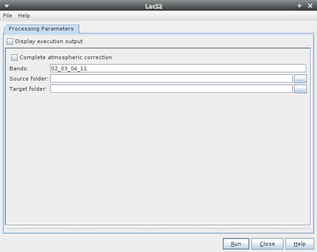

| LAC Algorithm Specification | |
The purpose of the LAC algorithm is to perform atmospheric correction of a Sentinel-2 granule (for coastal and inland waters).
| Parameter | Description |
|---|---|
| completeAtmosphericCorrection | If true, the complete atmospheric correction is applied |
| bands | The bands to be corrected separated by "_". |
| sourceFolder | The path to a folder of a Sentinel-2 tile. (For example: /Data/S2/S2B_MSIL1C_20180328T003659_N0206_R059_T55LCD_20180328T021112.SAFE/GRANULE/L1C_T55LCD_A005519_20180328T003700) |
The parameters described above can be set through the graphical user interface designed in the SNAP Desktop component:
